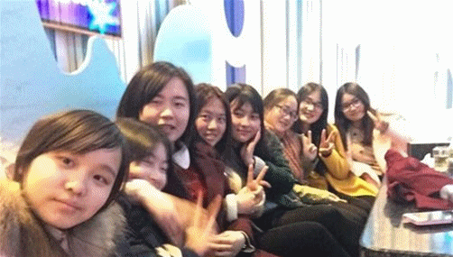

关于我们
2013-09-24

三年，十二年，回忆，青春，欢笑，泪水，友情，爱情，这一场与成长有关的旅程。。。
还记得高中时那个稚嫩的你吗？那个青涩的脸庞，今天强锅锅给我们看照片，看到高一的我们。三年，改变了我们的模样，改变我们的心态，我们从稚嫩变得成熟。打心底的喜欢上这个班，这的玩笑，这的快乐是独属于我们高中青春的，这三年，真好。。。
太多不舍，不舍的情怀被那一张张照片记录着，太多感慨，最终变为粉碎的纸屑撒向空中，太多坚强，或许也只是在那首朋友不哭中轻轻唱过。。。
或许以后再也碰不到像小孔和佳佳那样可以什么话都说的知己
或许以后再也碰不到那么一个陪你疯的基友梅子，
那个感性很贴心的肉肉，
那个被很多人喜欢的二货雨晴，
那个很肉麻的穆穆，
个常常被我骂脑残加二逼的蒋超，
那个带着一些神经质的贵贵，
那个唯一一个敢骂我打我的团长，
那个很强悍我不敢惹的健健，
那个很可爱声音很柔的硝酸银，
那个成绩特好又有气质的我的女神秦新月，
那个长得很萌很像猴子的小鑫鑫，
那个很矮很呆却很好的肖睿，
那个头眼睛都很大且很有智慧的大头丁娇，
那个皮肤很白很好看的汪颖，
那个很傻有点娘的何志豪，
那个很黑牙很白的瘦子蔡宏星，
那个搞怪爱打篮球的阿马，
那个总感觉有点忧郁很怪的奚超，
那个很胖很猥琐却很呆的陈亮，
那个很有毅力减肥很像李妈妈的大庆，
那个很呆很傻让人很无语的PPJ，
那个总喜欢插着口袋很装13的小峰峰，
那个总是淡淡的以后可能都见不到的萌萌，
那个很淡定眯眯眼的张璐璐，
那个我们班样子最琐的董伟浩，
那个在我们班不受欢迎到后期还不错的首富李嘉诚，
那个发火很霸气侧漏的高敏，
那个我搞不懂的说要追求乐观的谢平，
那个很帅气很瘦总带着阴笑的瑶美人，
那个让我相信浓缩就是精华的传证兄，
那个身材很好很温柔的翠翠，
那个皮肤很黑的张涛，
那个身材特好的腼腆的孩纸沈勇，
那个很喜欢许嵩的疯子陈燕，
那个唱歌很好听的奥特曼，
那个说话有点娘的花花，
那个高三才熟很细心的任强强，
那个爱装13嘴巴很搞笑的崔世亭，
那个很爱学习体育却很好写字像小学生的俞宏燕，
那个喜欢看小说时摸着自己额头头发的天线宝宝孙健，
那个很可爱不怎么说话理综超好的小情人祁源，
那个酷爱踢球体育超好的大饼，
那个个子很高像个酱油瓶的蒋国丹，
那个成绩超好的飞飞，
那个胖胖的唱歌很好听的死鬼，
那个憨憨阔爱的洪庆，
那个爱傻笑的学友哥，
那个很像大师的何文，
那个总是很严肃的王杰，
那个爱唱歌的很健康的杨伟平，
那个感觉很羞涩的汪启明，
那个人很好的高洋。
或许以后再也碰不到。喜欢这样的一个班，充满欢笑与痴狂。。。
很感激你们，让我在最痴狂最浮躁的年华中遇见这样美好的你们。。。
我会记得有那么一天，我们轻声唱着那首带有淡淡哀愁的十年
我会记得有那么一天，你们在篮球场卖力的打着球，我们为你们呐喊加油
我会记得么一天，我们在班门外排着十七班的千手观音
青春是什么？
一首耳熟能详，我们传唱的歌曲是青春
一本我们时常背诵的课本是青春
一群陪笑陪哭的朋友是青春
不是我们每一个人都会在这青春道路上碰到那样一个你悲伤时给你支撑的阮莞
也不是我们每一个人的身边都会有一个默默守护你的林静
这条青春道路，我们得到，失去，或许多年后会淡淡的说句:年轻真好
三年十七班，最痴狂的青春年华，我们的青春不散场！